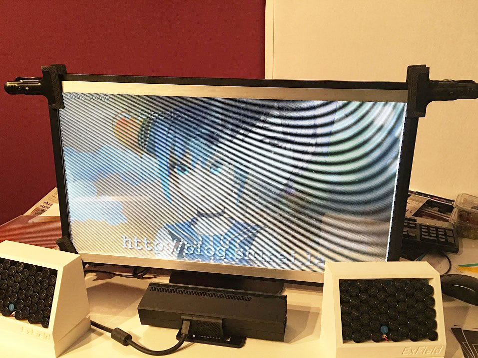
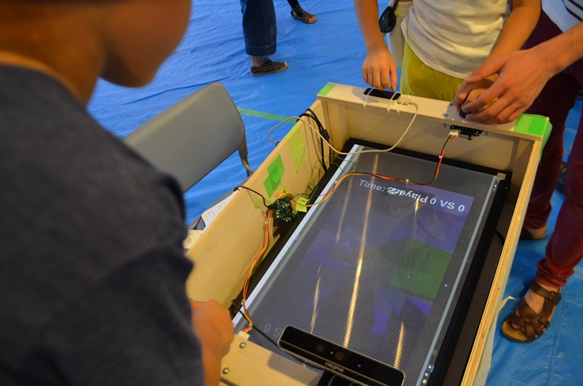
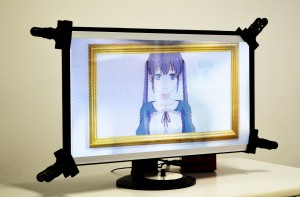
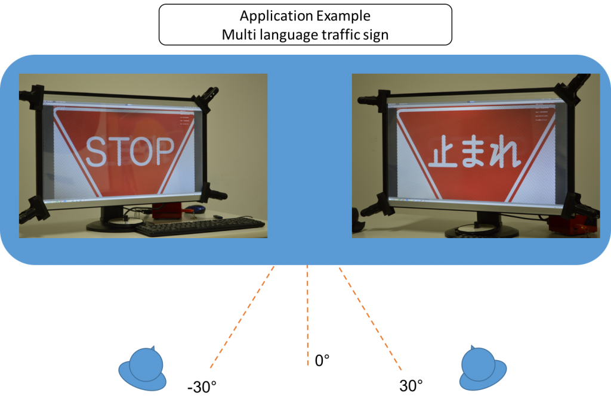
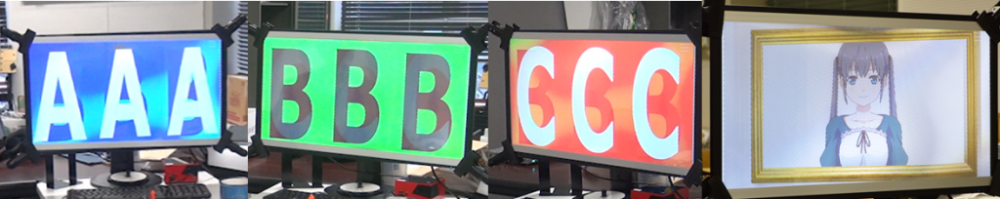
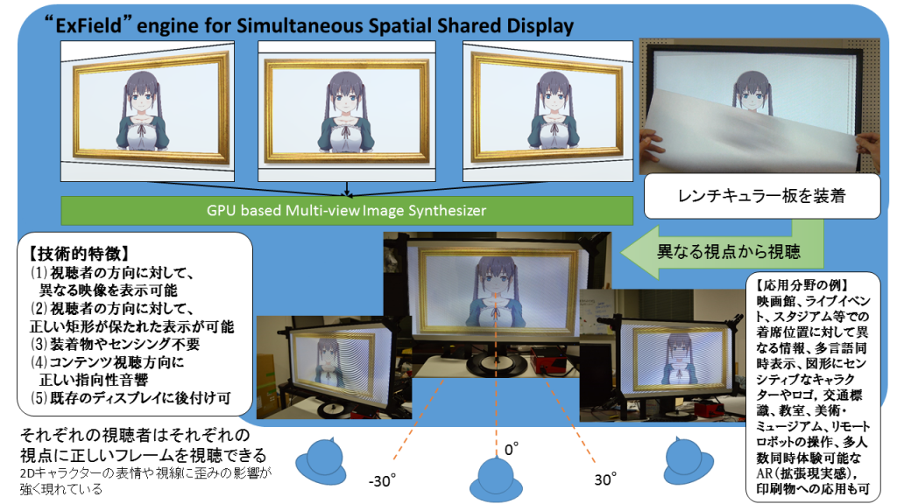

<!DOCTYPE html PUBLIC "-//W3C//DTD XHTML 1.0 Strict//EN" "https://www.w3.org/TR/xhtml1/DTD/xhtml1-strict.dtd" >
<html xmlns="https://www.w3.org/1999/xhtml" xml:lang="en" lang="ja" >
<head>
<!-- Global site tag (gtag.js) - Google Analytics -->
<script async src="https://www.googletagmanager.com/gtag/js?id=UA-15889025-2"></script>
<script>
  window.dataLayer = window.dataLayer || [];
  function gtag(){dataLayer.push(arguments);}
  gtag('js', new Date());

  gtag('config', 'UA-15889025-2');
</script>
<script data-ad-client="ca-pub-8010757944341847" async src="https://pagead2.googlesyndication.com/pagead/js/adsbygoogle.js"></script>
<meta http-equiv="content-type" content="text/html; charset=UTF-8" />


<link rel="pingback" href="http://blog.shirai.la/xmlrpc.php" />
<meta name="viewport" content="width=device-width, initial-scale=1, maximum-scale=1" />

<title>ExField &#8211; Shirai Lab</title>
<link rel='dns-prefetch' href='//fonts.googleapis.com/' />
<link rel="alternate" type="application/rss+xml" title="Shirai Lab &raquo; フィード" href="../../feed/index.html" />
<link rel="alternate" type="application/rss+xml" title="Shirai Lab &raquo; コメントフィード" href="../../comments/feed/index.html" />
		<script type="text/javascript">
			window._wpemojiSettings = {"baseUrl":"https:\/\/s.w.org\/images\/core\/emoji\/11.2.0\/72x72\/","ext":".png","svgUrl":"https:\/\/s.w.org\/images\/core\/emoji\/11.2.0\/svg\/","svgExt":".svg","source":{"concatemoji":"http:\/\/blog.shirai.la\/wp-includes\/js\/wp-emoji-release.min.js?ver=5.1.6"}};
			!function(a,b,c){function d(a,b){var c=String.fromCharCode;l.clearRect(0,0,k.width,k.height),l.fillText(c.apply(this,a),0,0);var d=k.toDataURL();l.clearRect(0,0,k.width,k.height),l.fillText(c.apply(this,b),0,0);var e=k.toDataURL();return d===e}function e(a){var b;if(!l||!l.fillText)return!1;switch(l.textBaseline="top",l.font="600 32px Arial",a){case"flag":return!(b=d([55356,56826,55356,56819],[55356,56826,8203,55356,56819]))&&(b=d([55356,57332,56128,56423,56128,56418,56128,56421,56128,56430,56128,56423,56128,56447],[55356,57332,8203,56128,56423,8203,56128,56418,8203,56128,56421,8203,56128,56430,8203,56128,56423,8203,56128,56447]),!b);case"emoji":return b=d([55358,56760,9792,65039],[55358,56760,8203,9792,65039]),!b}return!1}function f(a){var c=b.createElement("script");c.src=a,c.defer=c.type="text/javascript",b.getElementsByTagName("head")[0].appendChild(c)}var g,h,i,j,k=b.createElement("canvas"),l=k.getContext&&k.getContext("2d");for(j=Array("flag","emoji"),c.supports={everything:!0,everythingExceptFlag:!0},i=0;i<j.length;i++)c.supports[j[i]]=e(j[i]),c.supports.everything=c.supports.everything&&c.supports[j[i]],"flag"!==j[i]&&(c.supports.everythingExceptFlag=c.supports.everythingExceptFlag&&c.supports[j[i]]);c.supports.everythingExceptFlag=c.supports.everythingExceptFlag&&!c.supports.flag,c.DOMReady=!1,c.readyCallback=function(){c.DOMReady=!0},c.supports.everything||(h=function(){c.readyCallback()},b.addEventListener?(b.addEventListener("DOMContentLoaded",h,!1),a.addEventListener("load",h,!1)):(a.attachEvent("onload",h),b.attachEvent("onreadystatechange",function(){"complete"===b.readyState&&c.readyCallback()})),g=c.source||{},g.concatemoji?f(g.concatemoji):g.wpemoji&&g.twemoji&&(f(g.twemoji),f(g.wpemoji)))}(window,document,window._wpemojiSettings);
		</script>
		<style type="text/css">
img.wp-smiley,
img.emoji {
	display: inline !important;
	border: none !important;
	box-shadow: none !important;
	height: 1em !important;
	width: 1em !important;
	margin: 0 .07em !important;
	vertical-align: -0.1em !important;
	background: none !important;
	padding: 0 !important;
}
</style>
	<link rel='stylesheet' id='jquery.bxslider-css'  href='../../wp-content/plugins/bxslider-integration/assets/css/bxslider-integration.min.css@ver=5.1.6.css' type='text/css' media='all' />
<link rel='stylesheet' id='wp-block-library-css'  href='../../wp-includes/css/dist/block-library/style.min.css@ver=5.1.6.css' type='text/css' media='all' />
<link rel='stylesheet' id='bp-member-block-css'  href='../../wp-content/plugins/buddypress/bp-members/css/blocks/member.min.css@ver=6.0.0.css' type='text/css' media='all' />
<link rel='stylesheet' id='bp-group-block-css'  href='../../wp-content/plugins/buddypress/bp-groups/css/blocks/group.min.css@ver=6.0.0.css' type='text/css' media='all' />
<link rel='stylesheet' id='bp-legacy-css-css'  href='../../wp-content/plugins/buddypress/bp-templates/bp-legacy/css/buddypress.min.css@ver=6.0.0.css' type='text/css' media='screen' />
<link rel='stylesheet' id='contact-form-7-css'  href='../../wp-content/plugins/contact-form-7/includes/css/styles.css@ver=5.1.9.css' type='text/css' media='all' />
<link rel='stylesheet' id='dlm-frontend-css'  href='../../wp-content/plugins/download-monitor/assets/css/frontend.css@ver=5.1.6.css' type='text/css' media='all' />
<link rel='stylesheet' id='gridster-style-css'  href='../../wp-content/themes/gridster-lite/style.css@ver=5.1.6.css' type='text/css' media='all' />
<link rel='stylesheet' id='open-sans-condensed-css'  href='https://fonts.googleapis.com/css?family=Open+Sans+Condensed%3A300&#038;ver=5.1.6' type='text/css' media='all' />
<link rel='stylesheet' id='amazonjs-css'  href='../../wp-content/plugins/amazonjs/css/amazonjs.css@ver=0.10.css' type='text/css' media='all' />
<script type='text/javascript' src='../../wp-includes/js/jquery/jquery.js@ver=1.12.4'></script>
<script type='text/javascript' src='../../wp-includes/js/jquery/jquery-migrate.min.js@ver=1.4.1'></script>
<script type='text/javascript' src='../../wp-content/plugins/bxslider-integration/assets/js/bxslider-integration.min.js@ver=5.1.6'></script>
<script type='text/javascript'>
/* <![CDATA[ */
var BP_Confirm = {"are_you_sure":"\u672c\u5f53\u306b\u5b9f\u884c\u3057\u307e\u3059\u304b ?"};
/* ]]> */
</script>
<script type='text/javascript' src='../../wp-content/plugins/buddypress/bp-core/js/confirm.min.js@ver=6.0.0'></script>
<script type='text/javascript' src='../../wp-content/plugins/buddypress/bp-core/js/widget-members.min.js@ver=6.0.0'></script>
<script type='text/javascript' src='../../wp-content/plugins/buddypress/bp-core/js/jquery-query.min.js@ver=6.0.0'></script>
<script type='text/javascript' src='../../wp-content/plugins/buddypress/bp-core/js/vendor/jquery-cookie.min.js@ver=6.0.0'></script>
<script type='text/javascript' src='../../wp-content/plugins/buddypress/bp-core/js/vendor/jquery-scroll-to.min.js@ver=6.0.0'></script>
<script type='text/javascript'>
/* <![CDATA[ */
var BP_DTheme = {"accepted":"\u627f\u8a8d\u6e08","close":"\u9589\u3058\u308b","comments":"\u30b3\u30e1\u30f3\u30c8","leave_group_confirm":"\u672c\u5f53\u306b\u3053\u306e\u30b0\u30eb\u30fc\u30d7\u304b\u3089\u96e2\u8131\u3057\u307e\u3059\u304b ?","mark_as_fav":"\u304a\u6c17\u306b\u5165\u308a","my_favs":"\u308f\u305f\u3057\u306e\u304a\u6c17\u306b\u5165\u308a","rejected":"\u62d2\u5426\u6e08\u307f","remove_fav":"\u304a\u6c17\u306b\u5165\u308a\u304b\u3089\u524a\u9664","show_all":"\u3059\u3079\u3066\u8868\u793a","show_all_comments":"\u3053\u306e\u30b9\u30ec\u30c3\u30c9\u306e\u3059\u3079\u3066\u306e\u30b3\u30e1\u30f3\u30c8\u3092\u898b\u308b","show_x_comments":"\u3059\u3079\u3066\u306e\u30b3\u30e1\u30f3\u30c8\u3092\u8868\u793a  (%d)","unsaved_changes":"\u30d7\u30ed\u30d5\u30a3\u30fc\u30eb\u306b\u4fdd\u5b58\u3055\u308c\u3066\u3044\u306a\u5909\u66f4\u304c\u3042\u308a\u307e\u3059\u3002\u3053\u306e\u30da\u30fc\u30b8\u304b\u3089\u79fb\u52d5\u3059\u308b\u3068\u3001\u5909\u66f4\u304c\u3059\u3079\u3066\u5931\u308f\u308c\u307e\u3059\u3002","view":"\u8868\u793a","store_filter_settings":""};
/* ]]> */
</script>
<script type='text/javascript' src='../../wp-content/plugins/buddypress/bp-templates/bp-legacy/js/buddypress.min.js@ver=6.0.0'></script>
<link rel='https://api.w.org/' href='http://blog.shirai.la/wp-json/' />
<link rel="EditURI" type="application/rsd+xml" title="RSD" href="../../xmlrpc.php@rsd" />
<link rel="wlwmanifest" type="application/wlwmanifest+xml" href="../../wp-includes/wlwmanifest.xml" /> 
<meta name="generator" content="WordPress 5.1.6" />
<link rel="canonical" href="../../index.html@p=3828.html" />
<link rel='shortlink' href='../../index.html@p=3828.html' />
<link rel="alternate" type="application/json+oembed" href="http://blog.shirai.la/wp-json/oembed/1.0/embed?url=http%3A%2F%2Fblog.shirai.la%2Fprojects%2Fexfield%2F" />
<link rel="alternate" type="text/xml+oembed" href="http://blog.shirai.la/wp-json/oembed/1.0/embed?url=http%3A%2F%2Fblog.shirai.la%2Fprojects%2Fexfield%2F&#038;format=xml" />

	<script type="text/javascript">var ajaxurl = 'http://blog.shirai.la/wp-admin/admin-ajax.php';</script>

<script type="text/javascript" src="../../wp-content/plugins/si-captcha-for-wordpress/captcha/si_captcha.js@ver=1592148344"></script>
<!-- begin SI CAPTCHA Anti-Spam - login/register form style -->
<style type="text/css">
.si_captcha_small { width:175px; height:45px; padding-top:10px; padding-bottom:10px; }
.si_captcha_large { width:250px; height:60px; padding-top:10px; padding-bottom:10px; }
img#si_image_com { border-style:none; margin:0; padding-right:5px; float:left; }
img#si_image_reg { border-style:none; margin:0; padding-right:5px; float:left; }
img#si_image_log { border-style:none; margin:0; padding-right:5px; float:left; }
img#si_image_side_login { border-style:none; margin:0; padding-right:5px; float:left; }
img#si_image_checkout { border-style:none; margin:0; padding-right:5px; float:left; }
img#si_image_jetpack { border-style:none; margin:0; padding-right:5px; float:left; }
img#si_image_bbpress_topic { border-style:none; margin:0; padding-right:5px; float:left; }
.si_captcha_refresh { border-style:none; margin:0; vertical-align:bottom; }
div#si_captcha_input { display:block; padding-top:15px; padding-bottom:5px; }
label#si_captcha_code_label { margin:0; }
input#si_captcha_code_input { width:65px; }
p#si_captcha_code_p { clear: left; padding-top:10px; }
.si-captcha-jetpack-error { color:#DC3232; }
</style>
<!-- end SI CAPTCHA Anti-Spam - login/register form style -->
</head>

<body class="bp-legacy page-template-default page page-id-3828 page-child parent-pageid-1729 group-blog no-js">
<div id="container">
<div id="container">
<div id="sidebar">
<h1 id="blogtitle"><a href="../../index.html" title="Shirai Lab" rel="home">
Shirai Lab</a></h1>
<p class="tagline">
白井研究室</p>
<div class="sidebarwidget">
<div class="menu-menu-container"><ul id="menu-menu" class="menu"><li id="menu-item-3771" class="menu-item menu-item-type-custom menu-item-object-custom menu-item-home menu-item-3771"><a href="../../index.html">ホーム</a></li>
<li id="menu-item-3772" class="menu-item menu-item-type-post_type menu-item-object-page menu-item-3772"><a href="../../index.html@p=195.html">Home</a></li>
<li id="menu-item-3807" class="menu-item menu-item-type-post_type menu-item-object-page menu-item-3807"><a href="../../index.html@p=2433.html">Events</a></li>
<li id="menu-item-3775" class="menu-item menu-item-type-post_type menu-item-object-page menu-item-3775"><a href="../../index.html@p=2.html">Publications</a></li>
<li id="menu-item-3773" class="menu-item menu-item-type-post_type menu-item-object-page menu-item-has-children menu-item-3773"><a href="../../index.html@p=3253.html">Members</a>
<ul class="sub-menu">
	<li id="menu-item-3774" class="menu-item menu-item-type-post_type menu-item-object-page menu-item-3774"><a href="../../index.html@p=83.html">News</a></li>
</ul>
</li>
<li id="menu-item-3776" class="menu-item menu-item-type-post_type menu-item-object-page menu-item-3776"><a href="../../lavalvirtual.1.html">Laval Virtual</a></li>
<li id="menu-item-3777" class="menu-item menu-item-type-post_type menu-item-object-page menu-item-has-children menu-item-3777"><a href="../../index.html@p=2099.html">Lecture</a>
<ul class="sub-menu">
	<li id="menu-item-3778" class="menu-item menu-item-type-post_type menu-item-object-page menu-item-3778"><a href="../../index.html@p=2513.html">ComputerGames</a></li>
	<li id="menu-item-3779" class="menu-item menu-item-type-post_type menu-item-object-page menu-item-has-children menu-item-3779"><a href="../../index.html@p=2429.html">Unity</a>
	<ul class="sub-menu">
		<li id="menu-item-3780" class="menu-item menu-item-type-post_type menu-item-object-page menu-item-3780"><a href="../../index.html@p=2684.html">OpenCampus2013</a></li>
		<li id="menu-item-3781" class="menu-item menu-item-type-post_type menu-item-object-page menu-item-3781"><a href="../../index.html@p=2687.html">Unity3DでのExPixel対応コンテンツのつくりかた</a></li>
	</ul>
</li>
	<li id="menu-item-3782" class="menu-item menu-item-type-post_type menu-item-object-page menu-item-3782"><a href="../../index.html@p=2516.html">エンタテイメントシステム特論</a></li>
	<li id="menu-item-3783" class="menu-item menu-item-type-post_type menu-item-object-page menu-item-3783"><a href="../../index.html@p=2431.html">ゲームプログラミング</a></li>
	<li id="menu-item-3786" class="menu-item menu-item-type-post_type menu-item-object-page menu-item-has-children menu-item-3786"><a href="../../index.html@p=3393.html">メディアアート</a>
	<ul class="sub-menu">
		<li id="menu-item-3797" class="menu-item menu-item-type-post_type menu-item-object-page menu-item-3797"><a href="../../index.html@p=3672.html">講義「メディアアート」冬休み課題＆オンライン作品ギャラリー</a></li>
	</ul>
</li>
</ul>
</li>
<li id="menu-item-3800" class="menu-item menu-item-type-post_type menu-item-object-page menu-item-3800"><a href="../../index.html@p=1448.html">Bookshelf</a></li>
<li id="menu-item-3801" class="menu-item menu-item-type-post_type menu-item-object-page current-page-ancestor menu-item-has-children menu-item-3801"><a href="../../index.html@p=1729.html">Projects</a>
<ul class="sub-menu">
	<li id="menu-item-3802" class="menu-item menu-item-type-post_type menu-item-object-page menu-item-3802"><a href="../../index.html@p=204.html">2x3D</a></li>
	<li id="menu-item-3803" class="menu-item menu-item-type-post_type menu-item-object-page menu-item-3803"><a href="../expixel.1.html">ExPixel</a></li>
	<li id="menu-item-3805" class="menu-item menu-item-type-post_type menu-item-object-page menu-item-3805"><a href="../../index.html@p=2535.html">TEPIA</a></li>
	<li id="menu-item-3806" class="menu-item menu-item-type-post_type menu-item-object-page menu-item-3806"><a href="../../index.html@p=2187.html">スマ歩！さがみはら</a></li>
	<li id="menu-item-3804" class="menu-item menu-item-type-post_type menu-item-object-page menu-item-3804"><a href="../../index.html@p=202.html">Gallery</a></li>
	<li id="menu-item-3808" class="menu-item menu-item-type-post_type menu-item-object-page menu-item-3808"><a href="../../index.html@p=2428.html">アミューあつぎ「未来のゲームセンター」</a></li>
</ul>
</li>
<li id="menu-item-3809" class="menu-item menu-item-type-post_type menu-item-object-page menu-item-3809"><a href="../../index.html@p=2585.html">Access</a></li>
<li id="menu-item-3810" class="menu-item menu-item-type-post_type menu-item-object-page menu-item-3810"><a href="../../index.html@p=55.html">Contact</a></li>
<li id="menu-item-3811" class="menu-item menu-item-type-post_type menu-item-object-page menu-item-3811"><a href="../../index.html@p=40.html">Sitemap</a></li>
<li id="menu-item-3812" class="menu-item menu-item-type-post_type menu-item-object-page menu-item-3812"><a href="../../sitemap/sites.1.html">Sites</a></li>
<li id="menu-item-4372" class="menu-item menu-item-type-post_type menu-item-object-page menu-item-4372"><a href="../../index.html@p=4370.html">Shop</a></li>
<li id="menu-item-4650" class="menu-item menu-item-type-post_type menu-item-object-page menu-item-4650"><a href="http://blog.shirai.la/%e3%82%a2%e3%82%af%e3%82%bb%e3%82%b9%e3%81%aa%e3%81%97/">アクセスなし</a></li>
</ul></div></div>
	<form method="get" id="searchform" class="searchform" action="../../index.html" role="search">
		<label for="s" class="screen-reader-text">検索</label>
		<input type="search" class="searchfield" name="s" value="" id="s" placeholder="検索 &hellip;" />
		<input type="submit" class="submit" id="searchsubmit" value="検索" />
	</form>
<h3 class="sidetitle">
アーカイブ</h1>
<ul>
	<li><a href='../../blog/2018/07/index.html'>2018年7月</a></li>
	<li><a href='../../blog/2018/06/index.html'>2018年6月</a></li>
	<li><a href='../../blog/2018/02/index.html'>2018年2月</a></li>
	<li><a href='../../blog/2017/10/index.html'>2017年10月</a></li>
	<li><a href='../../blog/2017/09/index.html'>2017年9月</a></li>
	<li><a href='../../blog/2017/08/index.html'>2017年8月</a></li>
	<li><a href='../../blog/2017/07/index.html'>2017年7月</a></li>
	<li><a href='../../blog/2017/06/index.html'>2017年6月</a></li>
	<li><a href='../../blog/2017/04/index.html'>2017年4月</a></li>
	<li><a href='../../blog/2017/02/index.html'>2017年2月</a></li>
	<li><a href='../../blog/2017/01/index.html'>2017年1月</a></li>
	<li><a href='../../blog/2016/12/index.html'>2016年12月</a></li>
	<li><a href='../../blog/2016/11/index.html'>2016年11月</a></li>
	<li><a href='../../blog/2016/10/index.html'>2016年10月</a></li>
	<li><a href='../../blog/2016/09/index.html'>2016年9月</a></li>
	<li><a href='../../blog/2016/08/index.html'>2016年8月</a></li>
	<li><a href='../../blog/2016/07/index.html'>2016年7月</a></li>
	<li><a href='../../blog/2016/06/index.html'>2016年6月</a></li>
	<li><a href='../../blog/2016/04/index.html'>2016年4月</a></li>
	<li><a href='../../blog/2016/02/index.html'>2016年2月</a></li>
	<li><a href='../../blog/2015/12/index.html'>2015年12月</a></li>
	<li><a href='../../blog/2015/11/index.html'>2015年11月</a></li>
	<li><a href='../../blog/2015/10/index.html'>2015年10月</a></li>
	<li><a href='../../blog/2015/09/index.html'>2015年9月</a></li>
	<li><a href='../../blog/2015/08/index.html'>2015年8月</a></li>
	<li><a href='../../blog/2015/07/index.html'>2015年7月</a></li>
	<li><a href='../../blog/2015/06/index.html'>2015年6月</a></li>
	<li><a href='../../blog/2015/05/index.html'>2015年5月</a></li>
	<li><a href='../../blog/2015/04/index.html'>2015年4月</a></li>
	<li><a href='../../blog/2015/03/index.html'>2015年3月</a></li>
	<li><a href='../../blog/2015/02/index.html'>2015年2月</a></li>
	<li><a href='../../blog/2014/12/index.html'>2014年12月</a></li>
	<li><a href='../../blog/2014/11/index.html'>2014年11月</a></li>
	<li><a href='../../blog/2014/10/index.html'>2014年10月</a></li>
	<li><a href='../../blog/2014/09/index.html'>2014年9月</a></li>
	<li><a href='../../blog/2014/08/index.html'>2014年8月</a></li>
	<li><a href='../../blog/2014/07/index.html'>2014年7月</a></li>
	<li><a href='../../blog/2014/06/index.html'>2014年6月</a></li>
	<li><a href='../../blog/2014/05/index.html'>2014年5月</a></li>
	<li><a href='../../blog/2014/04/index.html'>2014年4月</a></li>
	<li><a href='../../blog/2014/03/index.html'>2014年3月</a></li>
	<li><a href='../../blog/2014/02/index.html'>2014年2月</a></li>
	<li><a href='../../blog/2014/01/index.html'>2014年1月</a></li>
	<li><a href='../../blog/2013/12/index.html'>2013年12月</a></li>
	<li><a href='../../blog/2013/11/index.html'>2013年11月</a></li>
	<li><a href='../../blog/2013/10/index.html'>2013年10月</a></li>
	<li><a href='../../blog/2013/09/index.html'>2013年9月</a></li>
	<li><a href='../../blog/2013/08/index.html'>2013年8月</a></li>
	<li><a href='../../blog/2013/07/index.html'>2013年7月</a></li>
	<li><a href='../../blog/2013/06/index.html'>2013年6月</a></li>
	<li><a href='../../blog/2013/05/index.html'>2013年5月</a></li>
	<li><a href='../../blog/2013/04/index.html'>2013年4月</a></li>
	<li><a href='../../blog/2013/03/index.html'>2013年3月</a></li>
	<li><a href='../../blog/2013/02/index.html'>2013年2月</a></li>
	<li><a href='../../blog/2013/01/index.html'>2013年1月</a></li>
	<li><a href='../../blog/2012/12/index.html'>2012年12月</a></li>
	<li><a href='../../blog/2012/11/index.html'>2012年11月</a></li>
	<li><a href='../../blog/2012/10/index.html'>2012年10月</a></li>
	<li><a href='../../blog/2012/09/index.html'>2012年9月</a></li>
	<li><a href='../../blog/2012/08/index.html'>2012年8月</a></li>
	<li><a href='../../blog/2012/07/index.html'>2012年7月</a></li>
	<li><a href='../../blog/2012/06/index.html'>2012年6月</a></li>
	<li><a href='../../blog/2012/03/index.html'>2012年3月</a></li>
	<li><a href='../../blog/2012/02/index.html'>2012年2月</a></li>
	<li><a href='../../blog/2011/12/index.html'>2011年12月</a></li>
	<li><a href='../../blog/2011/11/index.html'>2011年11月</a></li>
	<li><a href='../../blog/2011/10/index.html'>2011年10月</a></li>
	<li><a href='../../blog/2011/09/index.html'>2011年9月</a></li>
	<li><a href='../../blog/2011/08/index.html'>2011年8月</a></li>
	<li><a href='../../blog/2011/07/index.html'>2011年7月</a></li>
	<li><a href='../../blog/2011/06/index.html'>2011年6月</a></li>
	<li><a href='../../blog/2011/05/index.html'>2011年5月</a></li>
	<li><a href='../../blog/2011/03/index.html'>2011年3月</a></li>
	<li><a href='../../blog/2011/02/index.html'>2011年2月</a></li>
	<li><a href='../../blog/2011/01/index.html'>2011年1月</a></li>
	<li><a href='../../blog/2010/12/index.html'>2010年12月</a></li>
	<li><a href='../../blog/2010/11/index.html'>2010年11月</a></li>
	<li><a href='../../blog/2010/10/index.html'>2010年10月</a></li>
	<li><a href='../../blog/2010/09/index.html'>2010年9月</a></li>
	<li><a href='../../blog/2010/08/index.html'>2010年8月</a></li>
	<li><a href='../../blog/2010/07/index.html'>2010年7月</a></li>
	<li><a href='../../blog/2010/06/index.html'>2010年6月</a></li>
	<li><a href='../../blog/2010/05/index.html'>2010年5月</a></li>
	<li><a href='../../blog/2010/04/index.html'>2010年4月</a></li>
</ul>
<h3 class="sidetitle">
メタ情報</h1>
</div>
<!-- End Sidebar -->

<div id="main">
<div id="post-3828" class="post-3828 page type-page status-publish has-post-thumbnail hentry"> <a href="../../index.html@p=3828.html">
</a>
<div id="content">
<div id="postheading">
<h1>
ExField</h1>
</div>
<h1>裸眼多重化技術 「ExField」</h1>
<p>&nbsp;</p>
<h3>ExField for PlayCanvas</h3>
<p>WebGLベースのゲームエンジンによる実装です。<a href="http://blog.shirai.la/blog/2016/09/dcexpo2016/">DCEXPO2016 Laval Virtualブース</a>で公開実験を行います。</p>
<p><iframe width="990" height="557" src="https://www.youtube.com/embed/sr0FTguGtVg?feature=oembed" frameborder="0" allow="accelerometer; autoplay; encrypted-media; gyroscope; picture-in-picture" allowfullscreen></iframe><br />
</p>
<p><br />
<iframe width="990" height="557" src="https://www.youtube.com/embed/3dvUipql7XA?feature=oembed" frameborder="0" allow="accelerometer; autoplay; encrypted-media; gyroscope; picture-in-picture" allowfullscreen></iframe></p>
<p><iframe width="990" height="557" src="https://www.youtube.com/embed/XfFSJ1wzTTI?feature=oembed" frameborder="0" allow="accelerometer; autoplay; encrypted-media; gyroscope; picture-in-picture" allowfullscreen></iframe></p>
<h2>プレスリリース(2016/2/19)</h2>
<p><span style="color: #000000;">神奈川工科大学が“どこから見ても正面に見える”広告向けディスプレイ技術を開発 &#8212; ARや多言語表示に期待</span></p>
<p><strong>プレスリリースキット(ZIP, 20160216-press-ExField.pdf+関連画像と解説入り)</strong><br />
<a class="download-link" title="バージョン 2" href="../../download/4916/index.html" rel="nofollow">
	ExFieldプレスリリース20160219	(232 ダウンロード)
</a></p>
<p>近年、液晶ディスプレイの解像度は高解像度化し、4K（幅約4,000ピクセル）といった高解像度ディスプレイも一般化しつつある。</p>
<p>ディスプレイの同時表示技術は、画面分割や画面切り替えといった古典的手法の他に、メガネなし立体映像表示に使用される3D液晶技術を応用した複数視点表示技術が提案されているが、通常の表示方式に対して解像度が半減し、暗くなる上に、視認位置が限られるといった弱点があった。</p>
<p>白井准教授らは2010年にプロジェクションマッピングを応用した多重化隠蔽映像技術「Scritter」，「ScritterH」、2014年5月に第4世代多重化不可視技術「ExPixel」（エクスピクセル） を発表した。ExPixelは、市販のパッシブ 3D ディスプレイと互換のハードウェアで、 偏光メガネ着脱により2チャンネルのコンテンツを自由に切り替えて視認できる技術である。聴覚障がい者向け字幕付与といった応用に有用であり、株式会社富士通ソーシアルサイエンスラボラトリとの共同で合理的配慮対応にむけた製品化試験が行われている。しかし、同技術を一般に広く利用するためには、メガネの着脱のわずらわしさや音声の切り替えが課題とされており、教室などより実際の使用環境での継続的な研究が必要な段階となっている。</p>
<p>このたび開発に成功した「ExField」技術は、一連の研究の最新の成果として発表されるもので、ExPixelよりもさらに、一般に広く普及している液晶ディスプレイに利用できる技術で、偏光メガネのような装着物を必要としない多重化技術である。この技術は、大学院情報工学専攻の総合プロジェクトとして、従来からメガネが不要な3Dディスプレイを研究する谷中教授と白井研究室の大学院生・鈴木久貴さんとの共同で、レンチキュラー板と呼ばれるプラスチックレンズおよび、リアルタイム画像合成ソフトウェア(Unity)によって幅広い利用者が利用できる機材構成において実験を通して完成させた。これには、<br />
(1)視聴者の方向に対して異なる映像を表示可能<br />
(2)視聴者の方向に対して、正しい矩形が保たれた表示が可能<br />
(3)メガネ等の装着物やセンシング不要<br />
(4)コンテンツ視聴方向に正しい指向性音響<br />
(5)既存のディスプレイにユーザによって着脱可能<br />
といった特徴がある。キャラクターやロゴマークのような、表示比率が正しく表示されるべき図画を視点に依存せず正しく表示可能な、新しい感覚のディスプレイ技術である。</p>
<p>本技術の応用の可能性は広く、デジタルサイネージ、裸眼3D 、映画館やライブイベント、図形にセンシティブなキャラクターやロゴ 、交通標識、美術やミュージアム、リモートロボットの操作、多人数で同時体験可能なAR （拡張現実感）広告、印刷物への応用、といった用途が提案されている。既存のVRやARに利用されていたHMDやタブレットコンピュータといった装着物が不要になるため、インタラクティブ技術と組み合わせることでより広い応用が見込まれている。具体的にはスタジアム等の大型スクリーンへの利用で、利用者の着席位置に対して、視聴角度によって歪みがない画像や広告、応援するチームにあわせた情報や言語を表示できる。2020年に開催される東京オリンピックを背景に、3Dや4K/8Kといった高解像度ディスプレイに対して、強い推進力をもつ技術になることが期待される。</p>
<p>この技術は幾徳学園神奈川工科大学により特許出願中であり、3月 23 ～27 日にフランスで開催される、ヨーロッパ最大のVRに関する国際会議Laval Virtualにおいて、そのプロトタイプである「GAD: Glassless Augmented Display for Public Signage」を一般・専門家向けに展示発表する予定。国内では3月 1日に TEPIAホール（東京・北青山）にて、連携企業とともに初の発表会を行う。研究成果発表会である「エンタテイメントシステム工学研究会」は、白井准教授の専門とする科学コミュニケーションやエンタテイメント工学技術から、株式会社富士通ソーシアルサイエンスラボラトリといった企業を軸に、教育、医療、福祉、交通、施設、インフラ等へ、オープンな産学連携活動で活躍する企業パートナーが集まり、次世代の「おもしろいモノづくり」を共有する。参加無料（要申込）。<br />
■白井研究室 研究成果発表会「エンタテイメントシステム工学研究会」（2016年3月1日開催）<br />
詳細： <a href="http://blog.shirai.la/blog/2016/02/20160301/" class="autohyperlink" target="_blank">http://blog.shirai.la/blog/2016/02/20160301/</a><br />
申込： <a href="http://j.mp/TEPIA20160301" class="autohyperlink" target="_blank">http://j.mp/TEPIA20160301</a><br />
■白井研究室「ExField」http://blog.shirai.la/projects/exfield/　動画あり<br />
■白井研究室「ExPixel」 <a href="../expixel.1.html" class="autohyperlink" target="_blank">http://blog.shirai.la/projects/expixel/</a><br />
■フランス Laval Virtual <a href="http://www.laval-virtual.org/" class="autohyperlink" target="_blank">http://www.laval-virtual.org/</a></p>
<p>▼本件に関する問い合わせ先<br />
神奈川工科大学 工学教育研究推進機構　担当： 山本 博一<br />
〒243-0292 神奈川県厚木市下荻野1030<br />
Tel：046-291-3218<br />
E-mail： ExField at shirai.la</p>
<p>株式会社富士通ソーシアルサイエンスラボラトリ　広報室<br />
Tel：044-739-1520<br />
E-mail：ssl-pro at cs.jp.fujitsu.com</p>
<p><a href="../../wp-content/uploads/2016/02/ExField.jpg" rel="attachment wp-att-3829"></a></p>
<hr />
<p>ExField.JPG:代表画像<br />
&#8220;どこからみても正しい映像&#8221; が見える仕組み<br />
それぞれの視聴者はそれぞれの視点に正しいフレームを視聴できる，<br />
大型化することで，そこに人物が存在するような映像も生成できる．</p>
<p>動画・2つの方向によって異なる言語の表示<br />
<a href="https://www.youtube.com/watch?v=gB4iHLstMck" class="autohyperlink" target="_blank">https://www.youtube.com/watch?v=gB4iHLstMck</a></p>
<p>MPEGファイルでのダウンロード<a class="download-link" title="" href="../../download/4918/index.html" rel="nofollow">
	ExField動画：2つの方向によって異なる言語の表示	(198 ダウンロード)
</a></p>
<div id="attachment_3834" style="width: 1000px" class="wp-caption aligncenter"><a href="../../wp-content/uploads/2016/02/Traffic_sign.png" rel="attachment wp-att-3834"></a><p id="caption-attachment-3834" class="wp-caption-text">上記動画の解説</p></div>
<p>&nbsp;</p>
<p><a href="../../wp-content/uploads/2016/02/teaser.png" rel="attachment wp-att-3835"></a></p>
<p>静止画による画像表示例（ABCを同時表示，2Dキャラクターの表示）</p>
<p><a href="../../wp-content/uploads/2016/02/Press-Detail.png" rel="attachment wp-att-3836"></a></p>
<p>&#8220;どこからみても正しい映像&#8221; が見える仕組み<br />
それぞれの視聴者はそれぞれの視点に正しいフレームを視聴できる．2Dキャラクターの表情や視線に歪みの影響が強く現れている．</p>
<p>最新の画像および動画はこのページにて公開されます。<br />
<a href="../../index.html@p=3828.html" target="_blank">http://blog.shirai.la/projects/exfield/</a><br />
★ExFieldをご紹介する場合はこちらのURLをご記載ください。</p>
<p>なおプレスリリース本文でもご案内いたしました通り、3月1日に東京北青山のTEPIAホールにて発表会を行います。最新の動画や技術の詳細はその発表会の場で公開されます。<br />
告知<br />
<a href="http://blog.shirai.la/blog/2016/02/20160301/" target="_blank">http://blog.shirai.la/blog/2016/02/20160301/</a><br />
申込<br />
<a href="http://j.mp/TEPIA20160301" target="_blank">http://j.mp/TEPIA20160301</a></p>
<hr />
<blockquote class="twitter-tweet" data-width="550">
<p lang="en" dir="ltr">Congrats to Glassless from Kanagawa Institute of Technology! See you soon for your demo in Laval! <a href="https://twitter.com/o_ob">@o_ob</a> <a href="https://twitter.com/hashtag/ReVo2016?src=hash">#ReVo2016</a> <a href="https://t.co/xfWblsQElv">pic.twitter.com/xfWblsQElv</a></p>
<p>&mdash; Laval Virtual (@lavalvirtual) <a href="https://twitter.com/lavalvirtual/status/699613456761274369">February 16, 2016</a></p></blockquote>
<p><script async src="http://platform.twitter.com/widgets.js" charset="utf-8"></script></p>
<div id="comments">
</div>
<!-- #post-## -->
</div>
<!-- comments -->
	<nav role="navigation" id="nav-below" class="navigation-paging">
		<h1 class="screen-reader-text">投稿ナビゲーション</h1>

	
	</nav><!-- #nav-below -->
	</div>
<!-- content -->

<div id="footer">
<br />
&copy; Copyright 
2016 
Shirai Lab <br />
<a href="https://wordpress.org/">Proudly generated by WordPress</a>, archived at 2020-06-23.  <span class="sep"> | </span> Theme: Gridster by <a href="https://themefurnace.com" rel="designer">ThemeFurnace</a>.</div>
</div>
<!-- main -->
<script type='text/javascript' src='../../wp-includes/js/comment-reply.min.js@ver=5.1.6'></script>
<script type='text/javascript'>
/* <![CDATA[ */
var wpcf7 = {"apiSettings":{"root":"http:\/\/blog.shirai.la\/wp-json\/contact-form-7\/v1","namespace":"contact-form-7\/v1"}};
/* ]]> */
</script>
<script type='text/javascript' src='../../wp-content/plugins/contact-form-7/includes/js/scripts.js@ver=5.1.9'></script>
<script type='text/javascript' src='../../wp-content/themes/gridster-lite/js/navigation.js@ver=20120206'></script>
<script type='text/javascript' src='../../wp-content/themes/gridster-lite/js/skip-link-focus-fix.js@ver=20130115'></script>
<script type='text/javascript' src='../../wp-includes/js/wp-embed.min.js@ver=5.1.6'></script>
</body></html>